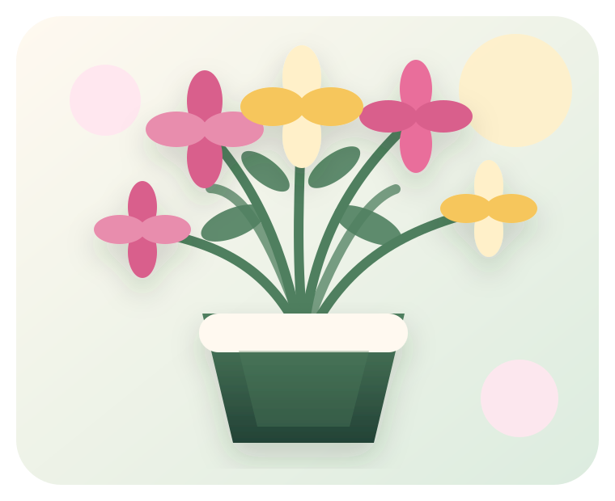
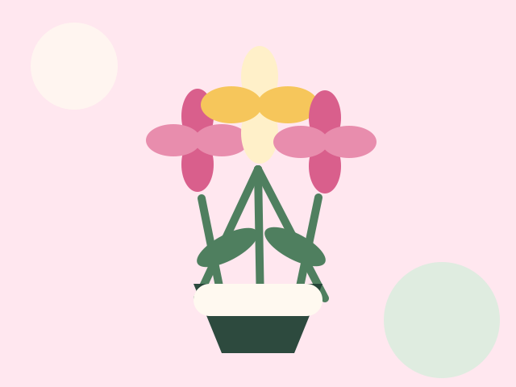
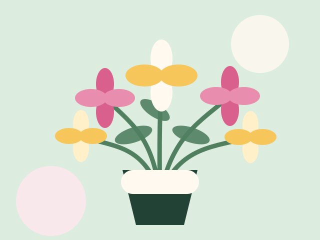
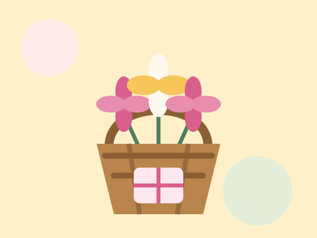

Floricultura local • Entregas sob encomenda
Flores que transformam momentos em memórias.
Buquês, arranjos e cestas especiais preparados com cuidado artesanal para aniversários, formaturas, datas comemorativas e pequenos gestos de carinho.

Produtos
Escolha a flor certa para cada momento
A página apresenta uma vitrine simples, objetiva e comercial, com cards de produtos, chamadas para ação e formulário de contato.

Buquês personalizados
Combinações para presentes, aniversários e homenagens especiais.
A partir de R$ 79,90
Arranjos decorativos
Peças para recepção, mesa posta, escritórios e eventos de pequeno porte.
A partir de R$ 119,90
Cestas especiais
Cestas com flores, chocolates e cartões para datas comemorativas.
A partir de R$ 149,90Sobre nós
Uma floricultura pensada para quem valoriza detalhes
A Flor & Afeto é uma floricultura fictícia criada para esta atividade prática. A proposta simula um negócio local que precisa de uma landing page clara, bonita e funcional para converter visitantes em clientes.
O objetivo do projeto é praticar estrutura HTML semântica, CSS moderno, responsividade, hierarquia visual, botões, cards e formulário de contato.
Depoimentos
Clientes que confiaram no nosso cuidado
“O arranjo ficou lindo e chegou no horário. A apresentação estava impecável.”
— Marina Oliveira
“Fui atendido com muita atenção. Expliquei a ocasião e recebi uma sugestão perfeita.”
— Rafael Martins
Contato
Solicite seu orçamento
Preencha os dados abaixo para simular um pedido. O formulário é visual e pode ser usado como base para futuras validações com JavaScript.
- WhatsApp: (44) 99999-0000
- Instagram: @floreafeto
- Rua das Orquídeas, 120 — Centro